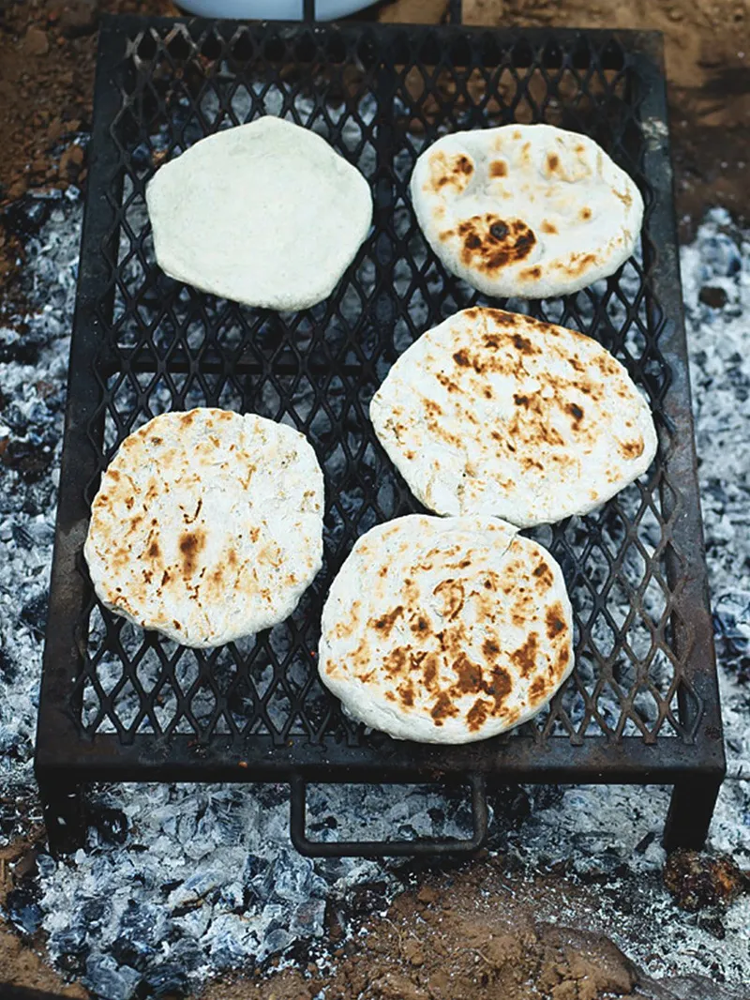

Navajo Flatbreads

Easy bread for dipping.
Who doesn't love Jamie, so go make these flatbreads.
They are so easy to make and you probably already have the ingredients.
Required Ingredients - click on this link for the real recipe.
- 600 g strong white bread flour , plus extra for dusting
- 2 heaped tablespoons baking powder
- 1 teaspoon dried herbs or spices, such as thyme, parsley, sumac or crushed fennel seeds , optional
- 6 tablespoons olive oil
Steps. Not really. Seriously, go to the link.
- Mix all the dry stuff.
- Add the oil with 150ml of water.
- Mix.
- Knead.
- Leave to rest the make little bread shapes from balls.
- Cook in non-stick frying pan.
Back to home